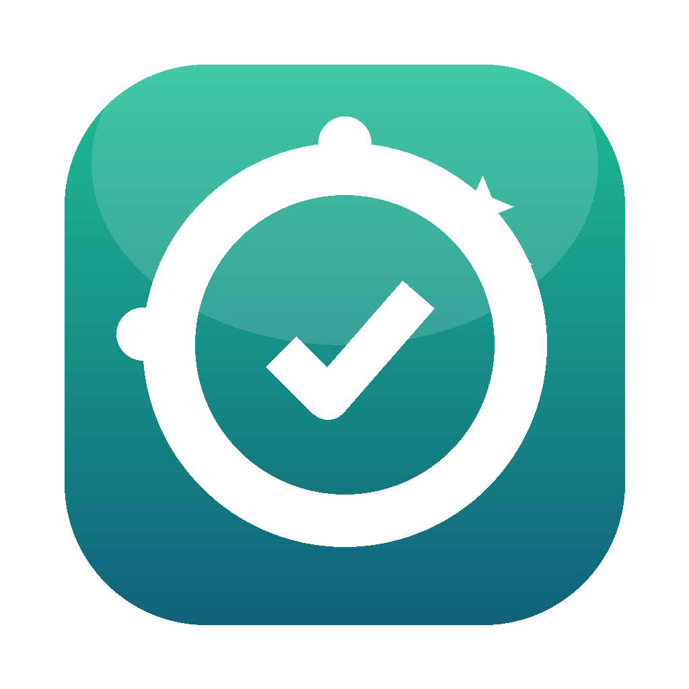
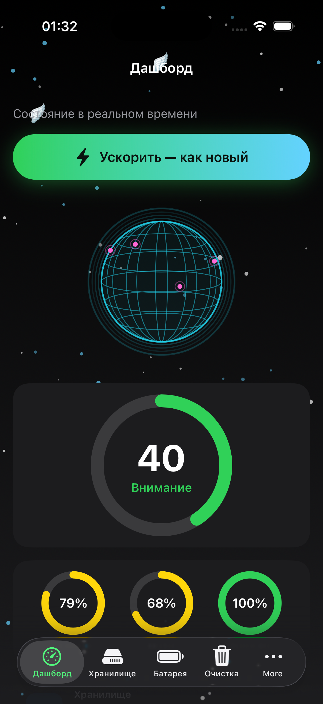
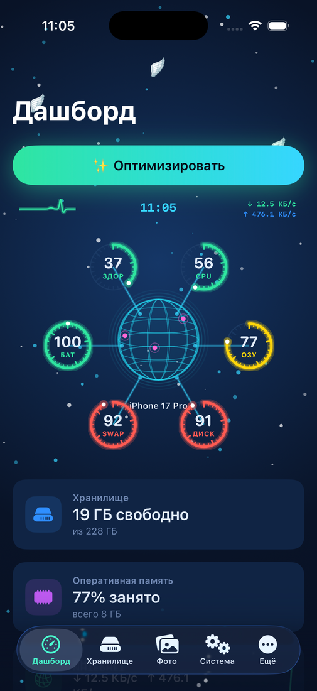
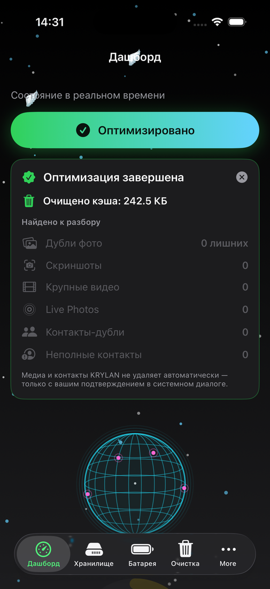
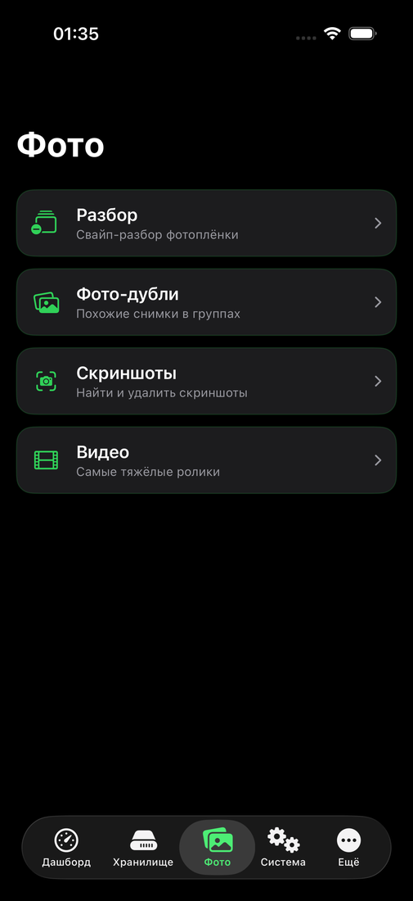
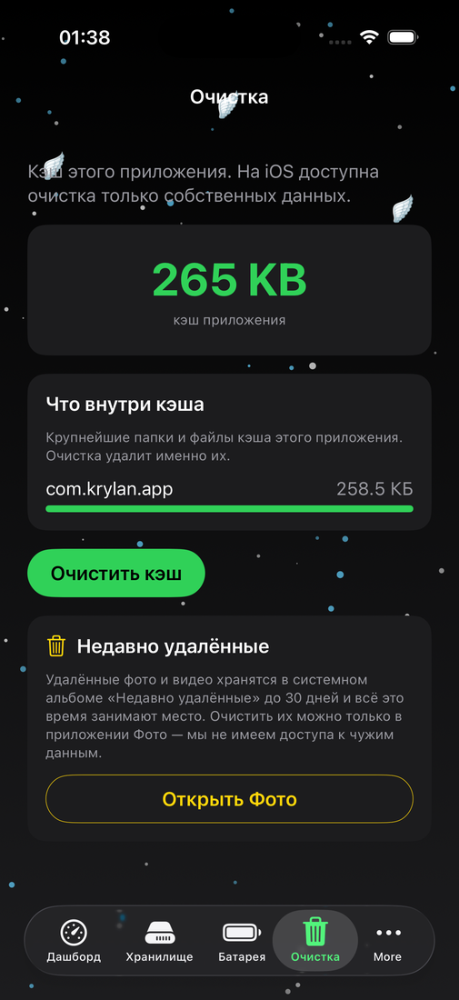
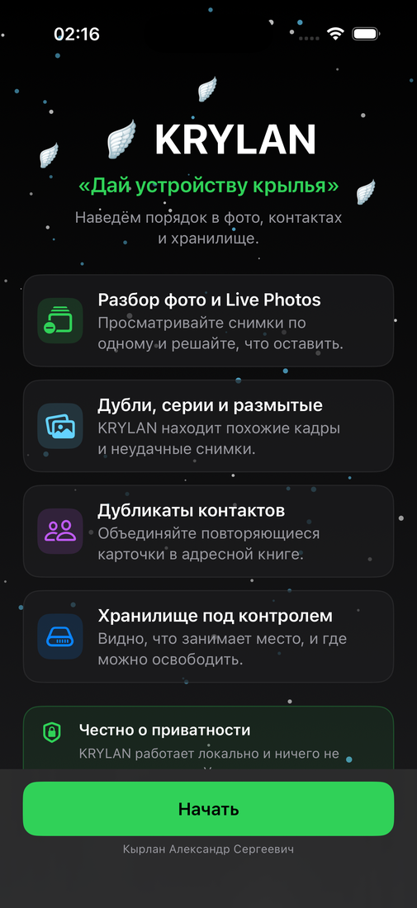

Красивый оптимизатор со «стеклянным» интерфейсом и фирменным анимированным глобусом. 🚀 Ускорить одной кнопкой, Software Updater, бенчмарк диска, sunburst-карта, живой график интернета. Мощнее CleanMyMac и BoostSpeed — но бесплатно, с открытым кодом и без вредных «бустеров» (никакого дефрага SSD и чистки реестра).
brew install --cask https://raw.githubusercontent.com/Alex1986-rgb/CleanMac/main/Casks/cleanmac.rb


Фирменный глобус
Анимированный неон-глобус — вращающаяся планета KRYLAN на дашборде каждой платформы. Не декор ради декора: живой пульс состояния устройства.
Ускорить (Smart Care)
Один клик: кэши и логи → Корзина, освобождение места (снимки APFS), сброс Quick Look, разгрузка памяти. Без дефрага SSD и реестра — честно и обратимо.
Дашборд
Кольца Health/CPU/ОЗУ/SWAP/Диск, пончики памяти и диска, тренды (4 линии), живой график интернета ↓/↑, батарея, процессы — в реальном времени.
Бенчмарк диска
Реальный тест скорости чтения и записи (read/write) — узнайте, как быстр ваш SSD, прямо в приложении.
Software Updater
Находит устаревшие приложения и пакеты и обновляет одной кнопкой — официальными источниками: winget (Windows), brew (macOS), apt (Linux).
Остатки программ
Находит осиротевшие данные удалённых приложений в ~/Library. Системное и Apple не трогает.
Sunburst-карта диска
Интерактивное кольцо с drill-down: погружайтесь в папки по клику и сразу видите, что съело место. Плюс классическая treemap Space Lens.
Шредер
Безвозвратное удаление файлов с перезаписью — то, что не должно попасть в чужие руки.
Глубокая Корзина
Видит не только обычную Корзину, но и скрытую системную корзину тома, где незаметно копятся десятки гигабайт. В реальном кейсе освободила ~95 ГБ.
Умная очистка
Один проход по всем безопасным категориям и очистка в один клик. Всё уходит в Корзину — обратимо.
Автопилот
Фоновый страж следит за памятью и при пике сам чистит кэши и разгружает систему.
Приватность
Очистка истории и cookies браузеров, недавних файлов и сохранённых состояний окон.
Защита
Эвристический поиск известного рекламного и нежелательного ПО в точках автозапуска.
Карта диска
Визуальная разбивка крупнейших папок — мгновенно видно, что съело место.
Обслуживание
Освободить память, сбросить DNS, переиндексировать Spotlight, очистить кэш шрифтов и Quick Look.
Деинсталлятор
Полное удаление приложений вместе с их кэшами и настройками.
Яркость и быстрые действия
Кнопка «100%» и слайдер яркости прямо на дашборде. Работает на Apple Silicon.
Похожие изображения
Perceptual hash находит визуально похожие фото — не только бит-в-бит дубли, но и пересжатые копии и кадры из серии. (Desktop)
Режим фокуса
Обратимая пауза фоновых процессов: тише система, больше ресурсов задаче. Снимаете режим — всё возвращается. (Desktop)
Health Report
HTML-отчёт о состоянии системы: метрики, диск, SMART — сохраняйте и сравнивайте во времени. (Desktop)
Диск-доктор
Проверка целостности диска и файловой системы плюс SMART-состояние накопителя — узнаёте о проблемах до того, как они станут потерей данных. (macOS + Desktop)
VACUUM баз браузеров
Сжимает раздувшиеся SQLite-базы Chrome/Firefox/Edge (история, кэш, cookies) — место освобождается, браузер шустрее. (macOS + Desktop)
«Большие и старые»
Крупные файлы, к которым давно не прикасались — лучшие кандидаты на удаление. Плюс отдельно крупные и старые загрузки. (macOS + Desktop)
Вложения Почты
Находит тяжёлые вложения в локальном хранилище Mail.app, которые годами съедают гигабайты. (macOS)
Дубликаты (blake2b)
Быстрый контентный поиск точных дублей по хешу blake2b — освобождайте место без риска удалить нужное. (Desktop)
Экспорт находок
Выгрузка результатов сканирования в CSV или HTML — разобрать список спокойно вне приложения или передать коллеге. (Desktop)
Bloatware-листер · контекст-меню
Список предустановленного «мусорного» ПО и менеджер пунктов контекстного меню Проводника. (Windows)
Snap / Flatpak · journald
Чистит старые ревизии Snap и Flatpak и сжимает журналы journald — типичные «пожиратели» места на Linux. (Linux)
📸 Скриншоты
KRYLAN на iPhone — тёмная тема, фирменный глобус, один тап «Оптимизировать».





✨ Оптимизировать — умная кнопка для любого устройства
Одна кнопка ✨ «Оптимизировать» делает РАЗНОЕ на разных устройствах. KRYLAN сам определяет ОС (Windows / macOS / Linux) и тип диска (SSD или HDD) и подбирает только то, что на этом железе безопасно и полезно. SSD-дефраг, например, изнашивает накопитель — поэтому KRYLAN его никогда не делает.
| Функция | 🪟 Windows | 🍏 macOS | 🐧 Linux | Почему адаптивно |
|---|---|---|---|---|
| Кэши / логи / temp → Корзина | ✅ | ✅ | ✅ | Освобождает место обратимо на всех ОС |
| Кэш миниатюр | ✅ thumbcache |
✅ Quick Look | ✅ ~/.cache/thumbnails |
У каждой ОС своё хранилище превью |
| Сброс DNS | ✅ flushdns |
✅ dscacheutil |
✅ resolvectl |
Разные службы резолвинга в каждой ОС |
| TRIM (обслуживание SSD) | ✅ defrag /L |
✅ авто системой | ✅ fstrim |
Поддерживает скорость SSD; на mac это делает сама система |
| Дефрагментация (ТОЛЬКО HDD) | ✅ defrag /O |
— не нужна (APFS) | — не нужна (ext4) | Нужна лишь магнитным дискам; совр. ФС не фрагментируются |
| SSD-дефраг | ❌ никогда | ❌ никогда | ❌ никогда | Вредно — изнашивает накопитель |
| Пакетные кэши | — | ✅ brew cleanup |
✅ apt clean + journal |
Чистится только там, где есть пакетный менеджер |
| Разгрузка памяти | — нет безопасного userland | ✅ purge |
✅ sync |
На Windows нет безопасной userland-команды |
| Предпросмотр оптимизации (что и сколько освободит) | ✅ | ✅ | ✅ | Сначала показываем, потом чистим — никаких сюрпризов |
| Пустые папки · битые файлы · остатки удалённых программ | ✅ | ✅ | ✅ | Универсальная уборка для всех ОС |
Экосистема KRYLAN — для всех устройств
Анимированный глобус, метрики и скорость интернета ↓/↑ в реальном времени — теперь на каждой платформе.
macOS — доступно
CleanMac, universal (Intel + Apple Silicon). Smart Care, бенчмарк диска, sunburst-карта, глобус, живой график интернета.
Windows / Linux — доступно
KRYLAN Desktop: глобус, предпросмотр оптимизации, Software Updater (winget/brew/apt), похожие изображения, режим фокуса, диск-доктор, VACUUM баз браузеров, шредер, экспорт находок CSV/HTML, Health Report. Один код для всех ПК.
iPhone / iPad — доступно
KRYLAN для iOS: глобус, фото-интеллект (дубли/серии/размытые/Live + авто-лучший кадр), swipe-разбор фото, скриншоты, похожие видео, контакты (дубли + неполные), календарь (старые события), «Недавно удалённые», виджет, навигация 5 вкладок.
Android — доступно
KRYLAN для Android: глобус, умные подсказки, медиа-хаб (крупные/дубли/скриншоты/загрузки/мессенджеры/видео) с корзиной, undo и сортировкой, менеджер приложений + неиспользуемые, APK-чистильщик, виджет диска.
Скачать
macOS
CleanMac.dmg или Homebrew.
iPhone (beta)
Файл .ipa — установка через бесплатный Sideloadly или AltStore с вашим Apple ID:
2. Подключите iPhone кабелем
3. Sideloadly → перетащите .ipa → Start
Подпись бесплатного Apple ID живёт 7 дней, потом переустановить. App Store / TestFlight — скоро.
Android (beta)
Готовый APK — установка напрямую (sideload):
2. Разрешите установку из этого источника
3. Откройте файл → Установить
Подписанная release-сборка. Для Google Play в релизе есть и .aab.
📖 Установка и использование
Пошагово для каждого устройства. Версия 2.46.0.
🍏 macOS — CleanMac
- Скачайте CleanMac.dmg со страницы Releases.
- Откройте .dmg и перетащите CleanMac в «Программы».
- Первый запуск: ПКМ по иконке → «Открыть» → «Открыть» (приложение вне App Store, без подписи — это разовое действие).
- Альтернатива — Homebrew:
Требования: macOS 11+, Apple Silicon или Intel (universal).
🪟 Windows — KRYLAN Desktop
- Скачайте KRYLAN-Windows.exe со страницы Releases.
- Если SmartScreen предупреждает: «Подробнее» → «Выполнить в любом случае» (сборка без платной подписи).
- Запустите — Python уже внутри, ничего ставить не нужно.
🐧 Linux — KRYLAN Desktop
- Скачайте KRYLAN-linux-x86_64 со страницы Releases.
- Дайте права и запустите:
./KRYLAN-linux-x86_64
tcl/tk включены в сборку. Если в системе нет tkinter: sudo apt install python3-tk.
📱 iPhone / iPad — KRYLAN (beta)
- Скачайте .ipa со страницы Releases.
- Установите через бесплатный AltStore или Sideloadly с вашим Apple ID.
- Подпись бесплатного Apple ID живёт 7 дней — потом переустановить. App Store / TestFlight — позже.
🤖 Android — KRYLAN
- Скачайте .apk со страницы Releases.
- Разрешите «Установка из этого источника».
- Откройте файл → «Установить». (Для Google Play в релизе есть и .aab.)